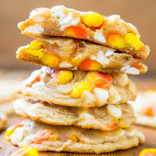
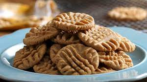

Yes. This is the famous, back-of-the-bag, chocolate chip cookie recipe. The formula is straightforward, easy, and never disappoints. But we did make a few extremely tiny changes to our method.
Yes. This is the famous, back-of-the-bag, chocolate chip cookie recipe. The formula is straightforward, easy, and never disappoints. But we did make a few extremely tiny changes to our method. We make the nuts optional. Because not everyone likes them or can have them. If you’d like to add nuts, make sure to measure them after they’ve been chopped. Almonds, pistachios, pecans, or walnuts would be great. We use a cookie scoop. It’s one of our favorite kitchen tools! It makes scooping faster and ensures evenly sized balls for evenly baked cookies.
View recipie

The one thing that sets this strawberry cake apart from others? Reduce fresh strawberry puree down and add to the best white cake batter.
This strawberry cake completely blew me away. After years of mediocre from-scratch strawberry cakes, my expectations were pretty low. It was time to taste test my efforts. Biting into the first pastel pink forkful was the moment of truth… I cried tears of joy. Or were those actual tears because I just dirtied every dish with all this strawberry cake recipe testing? Let’s get down to business. Watch me make the recipe below:
This strawberry cake completely blew me away. After years of mediocre from-scratch strawberry cakes, my expectations were pretty low. It was time to taste test my efforts. Biting into the first pastel pink forkful was the moment of truth… I cried tears of joy. Or were those actual tears because I just dirtied every dish with all this strawberry cake recipe testing? Let’s get down to business. Watch me make the recipe below:
View recipie

Peanut butter cookies are one of those desserts we're always in the mood for. They're salty, sweet, and more rich than a chocolate chip cookie ever could be. We're suckers for the classic fork crosshatch look, but you can totally skip it.
Pro tip: although we prefer eating natural peanut butter, for baking, we reach for the processed stuff. Unlike the natural brands, the fats in processed peanut butter remain homogenous while baking, resulting in tender cookies that spread just the right amount and aren't at all greasy. Look for processed brands without added sugar or salt if you'd like to stay as close to the natural stuff as possible.
Pro tip: although we prefer eating natural peanut butter, for baking, we reach for the processed stuff. Unlike the natural brands, the fats in processed peanut butter remain homogenous while baking, resulting in tender cookies that spread just the right amount and aren't at all greasy. Look for processed brands without added sugar or salt if you'd like to stay as close to the natural stuff as possible.